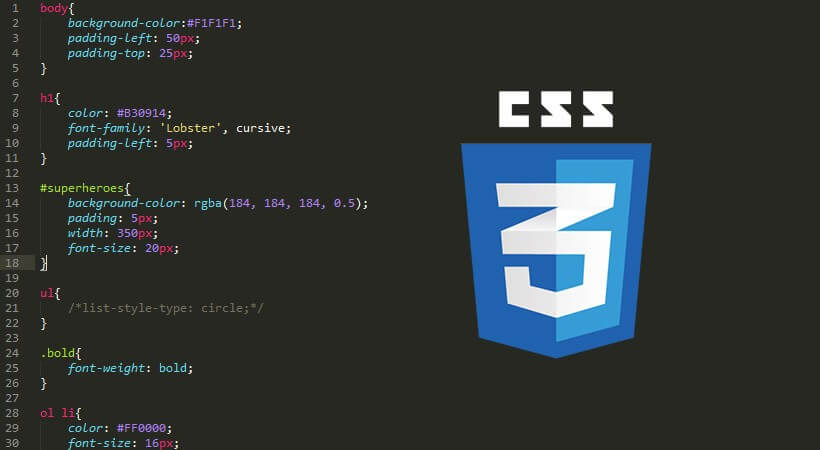

Cascading Style Sheets (Basamaklı Stil Şablonları ya da Basamaklı Biçim Sayfaları, bilinen kısa adıyla CSS), HTML'e ek olarak metin ve format biçimlendirme alanında fazladan olanaklar sunan bir işaretleme dilidir. İnternet sayfaları için genelgeçer şablonlar hazırlama olanağı verdiği gibi, bağımsız olarak harflerin stilini, yani renk, yazı tipi, büyüklük gibi özelliklerini değiştirmek için de kullanılabilir. Bu tekniğin en önemli özelliği kullanımındaki esnekliktir.
